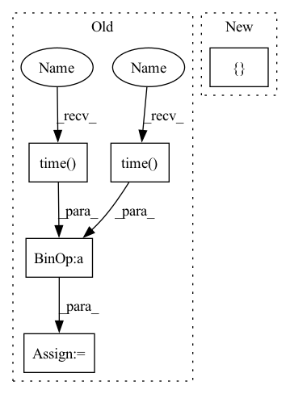

Pattern ID :33836

Before Change
metrics=[],
verbose=verbose,
)
start_time = time.time()
history = trainer.train(
dataloader,
n_iterations=n_iterations,
load_checkpoint_mode=LoadCheckpointMode.LAST_ITR if not force_overwrite else None,
force_overwrite=force_overwrite,
exec_metrics_on_train=False,
desc=f"Training {checkpoints_name}:{predictor_type.__name__}"
f"<{spikes_auto_encoder.n_units}u, {spikes_auto_encoder.n_encoder_steps}t>",
)
training_time = time.time() - start_time
history.plot(save_path=f"{checkpoint_folder}/figures/training_history.png")
try:
network.load_checkpoint(checkpoint_manager.checkpoints_meta_path, LoadCheckpointMode.BEST_ITR, verbose=verbose)
After Change
predictor_type = params.get("predictor_type", params["encoder_type"])
hidden_units = params["hidden_units"]
if isinstance(hidden_units, int) and hidden_units > 0:
hidden_units = [hidden_units]
if not hidden_units:
hidden_units = []
hidden_units.insert(0, params["n_units"])
In pattern: SUPERPATTERN
Frequency: 3
Non-data size: 5
Instances
Fragment ID: 97070553
Project Name: neurotorch/neurotorch
Commit Name: 64a0ffca71a7f748afaaa83fbced12fef6d8078a
Time: 2022-09-14
Author: 50332514+JeremieGince@users.noreply.github.com
File Name: applications/time_series_forecasting_spiking/results_generation.py
M Class Name: AnonimousClass
N Class Name: AnonimousClass
M Method Name: train_with_params(12)
N Method Name: train_with_params(12)
M Parent Class:
N Parent Class:
M File Name: applications/time_series_forecasting_spiking/results_generation.py
N File Name: applications/time_series_forecasting_spiking/results_generation.py
M Start Line: 286
M End Line: 352
N Start Line: 196
N End Line: 271
'>
Before Change
// train_loss, train_acc, samples = self.train_loop(epoch)
// print_samples(*samples)
train_loss, train_acc = 0., 0.
start_val = time.time()
self.model.eval()
_, stats = self.val_loop()
total_val_time += time.time() - start_val
self.log({
"train_loss": train_loss,
After Change
for epoch in range(epochs):
train_loss, train_acc = self.train_loop(epoch)
extra_dict = {
"train_loss": train_loss,
"epoch": epoch,
"train_acc": train_acc,
}
self.eval_and_log(extra_dict)
def eval_and_log(self, extra_dict={}):
'>
Fragment ID: 97070555
Project Name: libffcv/ffcv
Commit Name: a2fd4fbff4ccc29938175825c111bde473489d30
Time: 2021-12-30
Author: engstrom@csail.mit.edu
File Name: examples/train_imagenet.py
M Class Name: ImageNetTrainer
N Class Name: ImageNetTrainer
M Method Name: train(2)
N Method Name: train(2)
M Parent Class: Trainer
N Parent Class: Trainer
M File Name: examples/train_imagenet.py
N File Name: examples/train_imagenet.py
M Start Line: 260
M End Line: 280
N Start Line: 255
N End Line: 264
'>
Before Change
metrics=[],
verbose=verbose,
)
start_time = time.time()
history = trainer.train(
dataloader,
n_iterations=n_iterations,
load_checkpoint_mode=LoadCheckpointMode.LAST_ITR if not force_overwrite else None,
force_overwrite=force_overwrite,
exec_metrics_on_train=False,
desc=f"Training {checkpoints_name}:{predictor_type.__name__}"
f"<{spikes_auto_encoder.n_units}u, {spikes_auto_encoder.n_encoder_steps}t>",
)
training_time = time.time() - start_time
history.plot(save_path=f"{checkpoint_folder}/figures/training_history.png")
try:
network.load_checkpoint(checkpoint_manager.checkpoints_meta_path, LoadCheckpointMode.BEST_ITR, verbose=verbose)
After Change
if isinstance(hidden_units, int) and hidden_units > 0:
hidden_units = [hidden_units]
if not hidden_units:
hidden_units = []
hidden_units.insert(0, params["n_units"])
hidden_units.append(params["n_units"])
network = SequentialModel(
input_transform=[auto_encoder_training_output.spikes_auto_encoder.spikes_encoder],
'>
Fragment ID: 97070554
Project Name: neurotorch/neurotorch
Commit Name: 64a0ffca71a7f748afaaa83fbced12fef6d8078a
Time: 2022-09-14
Author: 50332514+JeremieGince@users.noreply.github.com
File Name: applications/time_series_forecasting_spiking/results_generation.py
M Class Name: AnonimousClass
N Class Name: AnonimousClass
M Method Name: train_with_params(12)
N Method Name: train_with_params(12)
M Parent Class:
N Parent Class:
M File Name: applications/time_series_forecasting_spiking/results_generation.py
N File Name: applications/time_series_forecasting_spiking/results_generation.py
M Start Line: 286
M End Line: 352
N Start Line: 196
N End Line: 271
'>
Before Change
skeletons_list = utils.convert_to_skeletons(keypoints_list)
// pass keypoints" bboxes to tracker
start_track = time.time()
tracks, debug_img = tracker.update(bboxes, rgb_frame, debug=args.debug_track)
end_track = time.time() - start_track
// classify tracked skeletons" actions
if len(tracks) > 0:
After Change
//// initiate drawer and text for visualization
drawer = Drawer(draw_numbers=args.draw_kp_numbers)
user_text = {
"text_color": "green",
"add_blank": True,
"Mode": args.task,
// MaxDist: cfg.TRACKER.max_dist,
// MaxIoU: cfg.TRACKER.max_iou_distance,
}
try:
// loop over the video frames
for bgr_frame in video:
'>
Fragment ID: 97070557
Project Name: cv-zmh/human-action-recognition
Commit Name: 823be28eb9d87c3bc808c93c636fb811cb4039a5
Time: 2021-08-31
Author: zinmoehtoo2015@gmail.com
File Name: src/demo.py
M Class Name: AnonimousClass
N Class Name: AnonimousClass
M Method Name: main(0)
N Method Name: main(0)
M Parent Class:
N Parent Class:
M File Name: src/demo.py
N File Name: src/demo.py
M Start Line: 50
M End Line: 129
N Start Line: 51
N End Line: 111